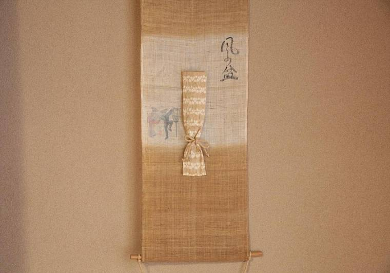
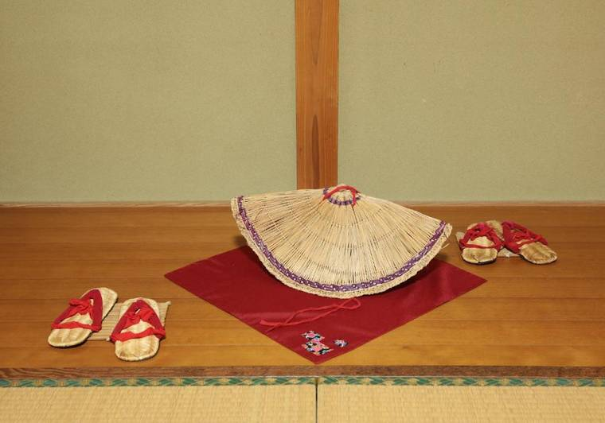
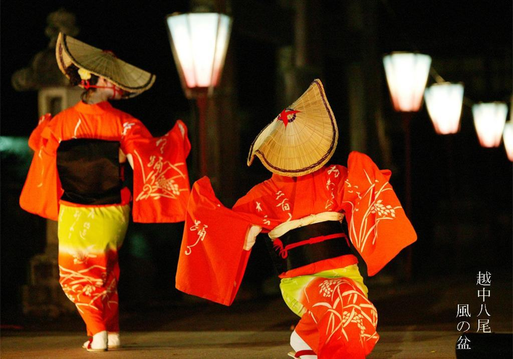

三日間の拠点として。
九月一日から三日、旧町の一帯は車で入れなくなります。宿の前まで車で行ける場所は限られ、多くの方が遠くの駐車場から歩くことになります。
お宿風音は規制の外側にあり、敷地内に無料の駐車場があります。車を置いて、町へ出て、夜遅くに戻る。荷物を気にせず動けるぶん、三日間の使い方が変わります。




おわら風の盆 九月一日 〜 三日
祭りの三日間も、車を停めて、歩いて。
九月一日から三日、旧町の一帯は車で入れなくなります。宿の前まで車で行ける場所は限られ、多くの方が遠くの駐車場から歩くことになります。
お宿風音は規制の外側にあり、敷地内に無料の駐車場があります。車を置いて、町へ出て、夜遅くに戻る。荷物を気にせず動けるぶん、三日間の使い方が変わります。



1—3 SEP
胡弓の音とともに、夜がふけるまで
Guide
About Owara
おわら風の盆は、富山市八尾町で毎年9月1日から3日に行われる、300年余り続くとされる行事です。胡弓と三味線の音色にのせて、編笠の踊り手が坂の町を流します。三日間で約20万人が訪れるとされる一方、会場となる旧町一帯は夕方から夜にかけて車両進入禁止となります。公式の演舞はおおむね23時ごろまで（9月3日は19時ごろから）。時間は年により変わるため、当年の発表をご確認ください。
前夜祭は、現在行われていません。例年8月20日〜30日に行われていた前夜祭は、担い手不足のため当面中止と発表されています（代替の有料公演が行われる年があります）。最新情報はおわら風の盆行事運営委員会の発表をご確認ください。
Where to stay
宿泊の選択肢は、大きく三つあります。
Traffic & Parking
例年、9月1日・2日は16時〜24時、3日は18時〜24時に旧町一帯が車両進入禁止となります（規制図は毎年8月ごろに発表されます）。観光用の臨時駐車場は町の外に設けられ、近年は協力金制（2026年は1台3,000円）。駐車場から会場へは、シャトルバスや徒歩での移動が必要です。
お宿風音の宿泊者には、この手順がありません。宿は規制の外側、駐車場は敷地内・無料です。旧町の会場までは車で数分。期間中の行き方は、チェックインの際にその年の規制図をもとにご案内します。
FAQ
はい。お宿風音は旧町の交通規制エリアの外側にあり、期間中も通常どおり車でお越しいただけます。敷地内の無料駐車場に、滞在中そのまま駐車できます。
旧町の会場一帯までは車で数分です。期間中は交通規制がありますので、チェックインの際にその年の規制図をもとに行き方をご案内します。
深夜のご帰宿も可能です。静粛時間は21時〜翌7時ですので、ほかのお客様のため、お静かにお戻りください。
ご予約は公式LINEのみで受け付けています。おわら期間はお部屋単位の特別料金で、空室状況・お部屋の写真・料金はLINEでご確認いただけます。例年早く埋まりますので、お早めにご相談ください。
例年8月20日〜30日に行われていた前夜祭は、担い手不足のため当面中止と発表されています。代替の公演が行われる年もありますので、最新情報はおわら風の盆行事運営委員会の発表をご確認ください。通常期のご宿泊はもちろん承ります。
胡弓や三味線が湿気に弱いため、小雨でも町流しが中断・中止されることがあります。宿が近ければ、お部屋で天気の回復を待って、夜にもう一度出直すことができます。
素泊まりのため、お食事は付きません。祭りの期間中は町に屋台や飲食店が出ますが大変混み合いますので、事前の買い込み・お持ち込みもおすすめです。お部屋に冷蔵庫があります。
はい、お子様連れも歓迎です。六名まで同じ座敷にお布団を並べて泊まれるお部屋が二室あり、ご家族でのおわら観覧の拠点に向いています。
状況によりお受けできる場合があります。事前に公式LINEでご相談ください。
はい。JR高山本線・越中八尾駅から約1.9km（車で約5分）です。期間中は列車が増発されますが、帰りの駅は大変混み合います。
このページの祭りに関する情報は、おわら風の盆行事運営委員会・富山市観光協会などの公表情報に基づいています。最新の開催情報・交通規制はおわら風の盆行事運営委員会・富山市観光協会の発表をご確認ください。
文責：越中八尾 お宿風音（富山市八尾町福島／住宅宿泊事業 第M160065216号） 最終更新：2026年9月5日
Official LINE
おわら期間は特別料金・お部屋単位でのご案内です。公式LINEではお部屋の写真も、料金も、いまの空き状況も公開しています。残りわずかになりやすい時期ですので、お早めにどうぞ。
登録は10秒。見るだけでも、どうぞお気軽に。